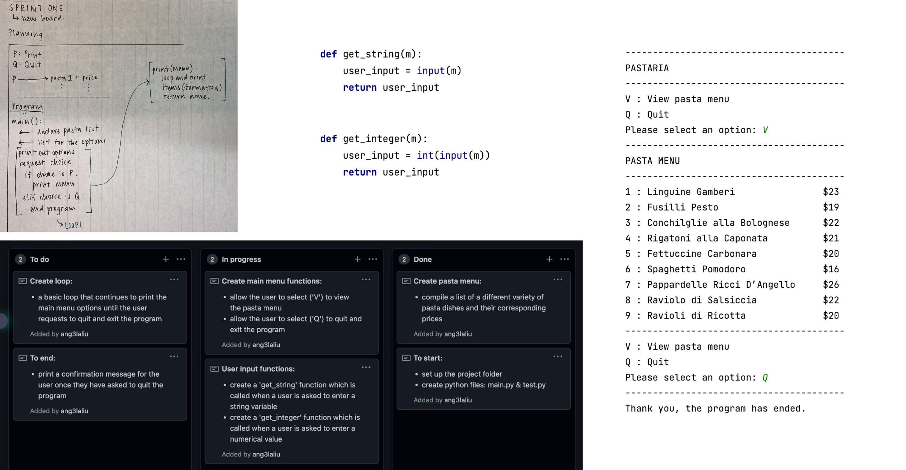

Brief
To develop a computer program using techniques and processes that will allow an operator/user to place an order for a customer, as well as responding accordingly to any user errors or unexpected entires. Some features within the program include allowing the operator to review and update the customers pizza choices, enter customer details, display pizza(s) ordered and pick-up/delivery requirements, before then displaying delivery details, final order and total cost in a receipt style format.
Initial Project Backlog:

Document how this changes over time

Describing Relevant Implications
Usability
The user can intuitively learn the program quickly Options are easy to understand and is easy to find appropriate actions Program has error prevention methods and communicates to the user about then
Functionality
Does the program work properly? It does not crash It does not do incorrect arithmetics Variables (lists) are all reset once the order is complete
Sustainability and Future Proofing
Can the program be updated? -> add new features Can the program be maintained? -> cna it be handed over to another developer who can understand it quickly
Sprint One
Aim:
To create a main menu for users which runs in a loop, with two options; print the pasta menu or quit the program and consequently, stop the loop. The pasta menu displayed after selecting the print option should have a corresponding item number as well as price.
Planning Board & Code Output:
Reflection:
The first sprint I have completed for my program prints a basic pasta menu for the customer when requested, along with a list of the pasta prices. The program runs in a loop, which means every time the pasta menu is printed (upon the user request 'V' to 'view' menu) the user is redirected to the main menu, until the quit option ('Q') is requested. If the user requests to quit the program, the loop terminates and a confirmation message is printed, informing the user that the program has ended. I have also coded 'get_integer' and 'get_string' functions, which provide simple validations for the program when the user enters either a numerical or string variable. I have considered adding further validation to the 'get_string' code to capitalise all user entries in the second sprint. This should generate less issues for the user (as when entering an 'v' or 'q' the program will still accept/understand the user entry) and prevent the program from crashing altogether. The 'get_integer' function is not yet being put to use in the program, but will certainly be called in future sprints when the user is able to order a pasta/select an index number from the pasta list. I have yet to run into any errors in the code.
Sprint Two
Aim:
To create a function which allows the user to order a pasta dish from the pasta menu, selecting a flavour and quantity of choice. Another function will also be created to enable the operator to review their current order status, which means printing all of the pizza flavours and quantities they have ordered as well as the price. These options will be incorporated into the main menu as 'A' for 'Add pasta to order' and 'R' for 'Review customer order'.
Stand Up:
Planning for sprint two includes a short meeting at the beginning of the lesson which questions what we have already completed, what we intend to complete and what is blocking us from doing so. On the 21st of June, I had completed and tested the first sprint of my program and pushed it to Github. I decided, as seen above, to finish a reflection for my first sprint and start planning for my second sprint, which involes creating an add pasta to order and review order function.
Planning Board & Code Output:


Reflection:
An error I encountered was if the user entered an index number that did not exist, such as 100, the program would crash and as it is unable to find a value in the pasta menu list which matched the user's input. As there are no validations which can yet prevent the user from entering invalid indexes, the program could not recover from this error and crashed. Consequently, I plan to make validations in a future sprint of my program which will provide limits for the user's inputs surrounding indexes and quantities.
Sprint Three
Aim:
To create a function which allows the user to adjust the number of pasta dishes in their current order. The function should print out the customer order with corresponding item numbers and ask the user which pasta dish they wish to change the quanity of. The user can then input the new number of dishes they would like. This update pasta option will be incorporated into the main menu as 'U' for 'Update pasta quantity'.
Planning Board & Code Output:

Reflection:
This 'update pasta' function is slightly different from what I initially planned in my project backlog. My original idea was to create a function where the user can remove a certain number of pasta from their order. I ultimately decided that rather than asking how many pasta the user would like to remove, it would be more appropriate for the program to ask for the new quatity of desired pasta. This design choice can be effective in situations where the user would like more of a pasta they have already ordered. I thought an 'update pasta' function would be more sutiable, rather than using the 'add pasta' option and creating a double up in the list. However, this would be irrelvant should the user choose 'add pasta' over than 'update pasta' in a circumstance such as this.
The first screenshot demonstrates how the update pasta function runs when the user makes no mistakes upon entry. The second screenshot next to it is where I encountered an error, a string is entered when the program wants an integer. There is no validation to support this and return an error message, so instead the program crashes. This is something I will be looking to validate in my final sprint.
Sprint Four
Aim:
To create several functions which will allow the user to view a general description of each pasta dish, cancel their order, input customer details and finalise the order. Pasta description ('P') will print pasta names, description of dish and prices upon request. Cancel order ('C') will request confirmation from the user, before clearing both the customer order and details lists or state that no changes have been made. Get customer details ('G') will request an order name, phone number and delivery option. Pick up is free of charge and delivery is an extra $3, the program will request an address. Finish order ('F') will display the order and details for the user to check once more before requesting confirmation.
Planning Board & Code Output:


Reflection:
validation
Sprint Five
Aim:
lots of validation
Planning Board & Code Output:
Reflection:
reflection
Final Reflection
What worked well:
Errors I Encountered:
Addressing Relevant Implications
Usability
Functionality
Sustainability and Future Proofing
Example of formatted code
# interesting comment
def review_fruit(l):
for x in l:
output = "{:≤ 10} -- {: >4}".format(x[0], x[1])
print(output)
return None
Buttons
You can apply the btn class to any element that requires a button style.